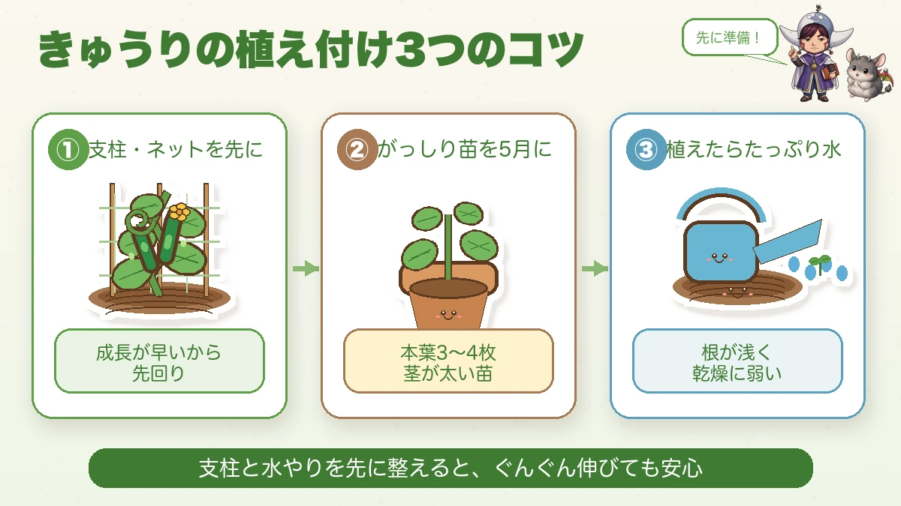
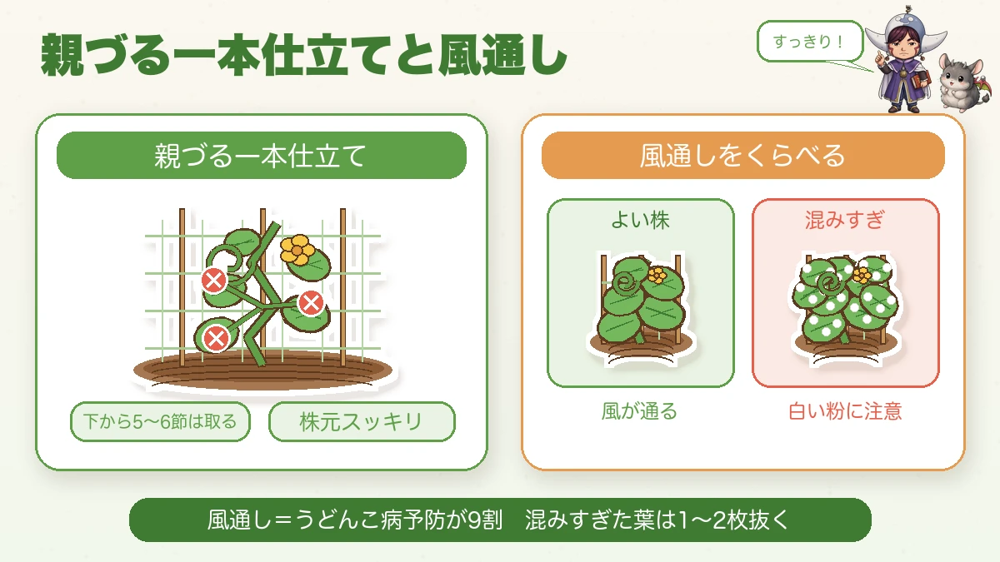
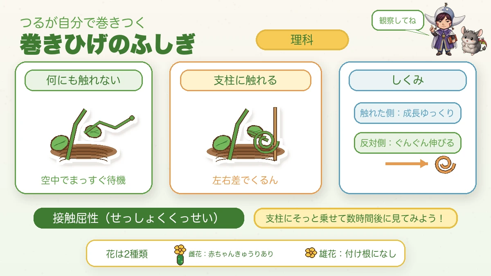

Put the netting up before you plant 🥒 A cucumber outruns you

🥒 "The leaves have gone white and powdery."
🥒 "Little orange beetles are eating it."
🥒 "What are those curly bits on the ends of the vines?"
Hello, I'm Eiko. Eight years of growing vegetables organically and without pesticides, and a teaching licence in science.
Cucumbers are the summer kitchen's best friend — remarkably fast-growing, and when they go well you pick every day. Enough to start giving them to neighbours.
And today's science bit is the one children like most: how a tendril works out which way to wrap itself round a cane. You can test it by hand.
① Put the supports up first

What this diagram says （図解の文字）
- Three things about planting cucumbers — "prepare first!"
- ① "canes and netting first" — "because it grows fast", "get ahead of it"
- ② "a sturdy plant" — "3–4 true leaves", "thick stem"
- ③ "water it well after planting"
Why cucumbers specifically? Because they grow extraordinarily fast. Two or three weeks after planting the vines are away, and you think "ah — I never put the supports in."
Then the vine runs along the ground, and that's where the pests and disease get it. A first-year classic.
- Choose a sturdy plant — 3–4 true leaves, thick stem. Plant once frost risk has gone
- 40–50 cm (16–20 in) apart. Crowded means poor airflow, which means powdery mildew
- Netting or an A-frame, 1.8–2 m (6–7 ft) high, up before or on the day you plant
- Water well after planting. Cucumber roots are shallow and it suffers in dry soil
② Airflow is the whole of no-spray growing

What this diagram says （図解の文字）
- A single main stem, and airflow — "nice and clear!"
- "Single-stem training" — "remove everything from the lowest 5–6 nodes" — "a clear base"
- "Compare the airflow": good plant — "air moves" ／ too congested — "watch out for the white powder"
The cucumber's main enemy is powdery mildew — the white bloom on the leaves — and poor airflow makes it far more likely.
I recommend training to a single main stem: take the central vine up as the leader, and remove the side shoots, laterals and female flowers from the lowest five or six nodes early. A clear base lets the air through, and mildew struggles. The plant also tires less.
"Remove the female flowers? The ones that become cucumbers?"
Yes. Letting a small plant carry fruit exhausts it and it runs out of steam later in the season. Hold your nerve — this is the groundwork for picking a lot later.
Prevention is nine tenths of mildew
Remove affected leaves promptly, and don't let the middle of the plant become a jungle. Taking out one or two congested leaves makes a real difference. It feels wasteful; do it anyway.
③ Cucurbit beetles, and water
The other enemy is the cucurbit leaf beetle — a small orange beetle that loves cucurbit leaves. A young plant hit by them weakens fast.
While the plant is small, surround it with a collar — a fertiliser bag or a cut bottle round the plant works. They also dislike glinting light, so aluminium foil or silver mulch at the base helps. They're sluggish in the morning, so hand-picking then is quietly effective.
And water
A cucumber is mostly water. Let it dry and the flavour drops and the fruit goes crooked.
In summer, a full watering can (2–3 L) per plant, in the morning, when the soil surface is dry. Straw or mulch to stop the soil drying makes the flavour much more consistent.
④ Feeding and picking — how "every day" happens
Cucumbers are hungry plants. Once fruiting starts, resources pour into the fruit — so from the first fruit, a handful of organic fertiliser around the plant every two weeks. Skip it and the fruit goes thin, the ends curl, and the plant burns out early.
And picking: cut them at 18–20 cm (7–8 in), in the morning.
Let one get large and it takes everything, the plant tires abruptly, and the next ones don't come. "Slightly small" is the right size.
Walk the row each morning and take anything approaching size. That's all "picking every day" actually is.
Science bit: how a tendril knows 🌀

What this diagram says （図解の文字）
- The mystery of the tendril — "the vine wraps itself"
- "Touching nothing" — "waiting straight out in the air"
- "Touching a cane" — "the difference between the sides curls it"
- "The mechanism: the touched side grows slowly"
The thing to watch if you grow cucumbers: the fine tendrils coming off the vine.
When a tendril touches a cane, the side that made contact grows very little while the opposite side keeps growing. The difference between the two sides curls it inward, round the support.
This is thigmotropism — a plant responding to being touched.
The name is long; the experiment isn't. Lay a growing tendril gently on a cane, and look again a few hours later. It has wrapped itself.
And a tendril touching nothing waits out straight in the air, so you can compare the two side by side.
So "it flowers and never fruits" is sometimes just looking at the male flowers. And don't worry — most modern varieties set fruit without pollination, so a female flower is generally enough.
To sum up
- ✅ Cucumbers grow fast. Put the canes and netting up first
- ✅ Single-stem training plus stripping the lowest nodes — mildew is nine tenths prevention
- ✅ Remove the early female flowers so the plant doesn't exhaust itself
- ✅ 40–50 cm apart, and thin congested leaves
- ✅ Collar young plants against beetles, and use foil for the glint
- ✅ Water in the morning, 2–3 L per plant, and mulch
- ✅ Feed every two weeks once fruiting starts
- ✅ Pick at 18–20 cm, in the morning. Slightly small is right
- ✅ A tendril curls because the touched side stops growing
- ✅ A tiny cucumber at the base = female flower
Cucumbers pay you back for the attention, every single day. Eat one straight off the plant and the difference in freshness is obvious 🥒
Thank you for reading!